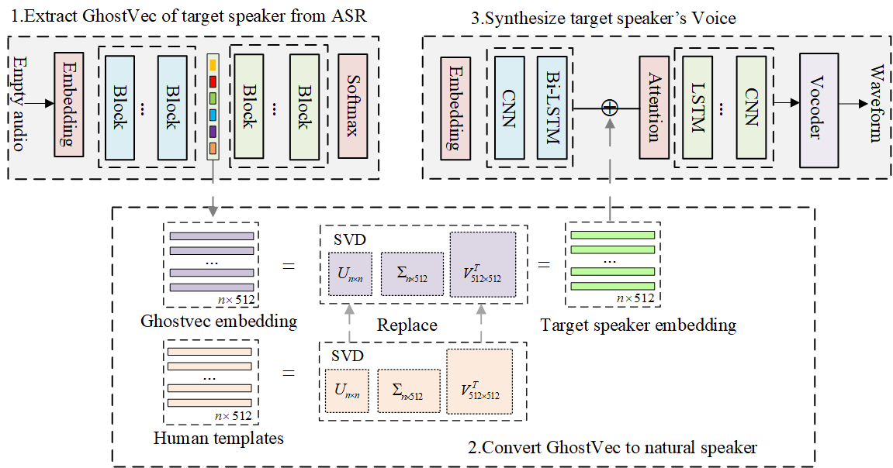

The following selected speech samples relate to a paper (GhostVec: Extracting Speaker Voice from End-to-End ASR Model using Adversarial Examples). We compare ourselves to genuine speech.

| Speaker id | Genuine speech | SVD-modified GhostVec speech | Text |
|---|---|---|---|
| 1 | AND DEMONSTRATE A NEW KIND OF APPARITION THE GHOST STORY OF TO DAY GIVES YOU SPINAL SENSATIONS WITH A DIFFERENCE. | ||
| 2 | AND THE NEIGHBORS WOULD SAY TO EACH OTHER IN A LOW VOICE. | ||
| 3 | HE MURMURED TO HIMSELF OBVIOUSLY. | ||
| 4 | THAT SHE SHOULD HAVE GONE THE LONGEST WAY ROUND TO FLORENCE IN ORDER TO SPEND A FEW WEEKS WITH HER INVALID SON. | ||
| 5 | THE BARONESS RETURNED TO THE HOTEL WITH AS MUCH CAUTION AS EUGENIE USED IN LEAVING IT SHE RAN LIGHTLY UP STAIRS AND WITH AN ACHING HEART ENTERED HER APARTMENT CONTIGUOUS AS WE KNOW TO THAT OF EUGENIE SHE WAS FEARFUL OF EXCITING ANY REMARK. | ||
| 6 | I HAD MADE UP MY MIND THAT IF YOU DIDN'T COME FOR ME TO NIGHT. |